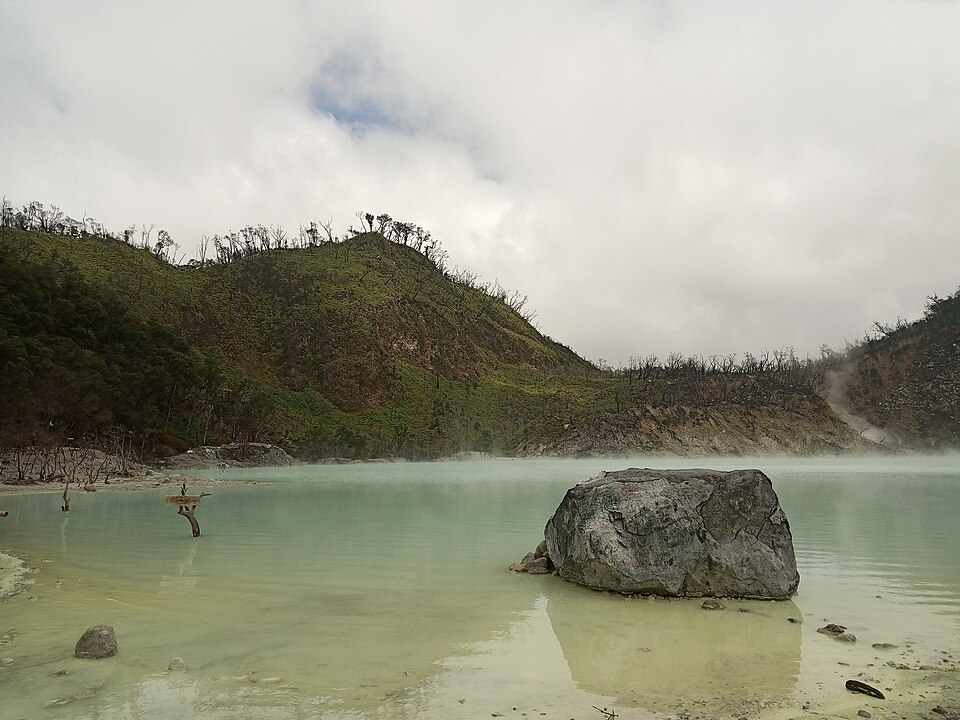
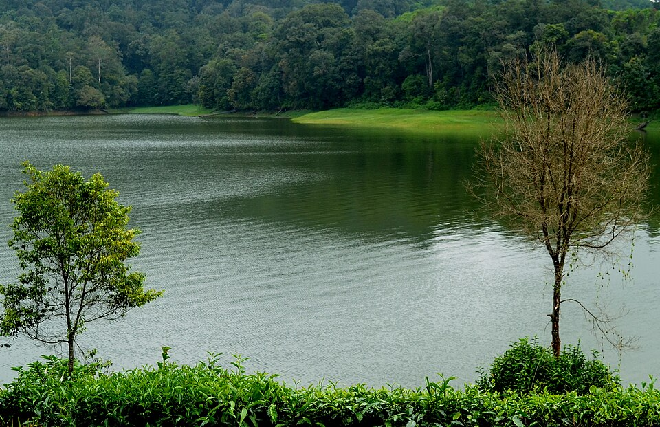
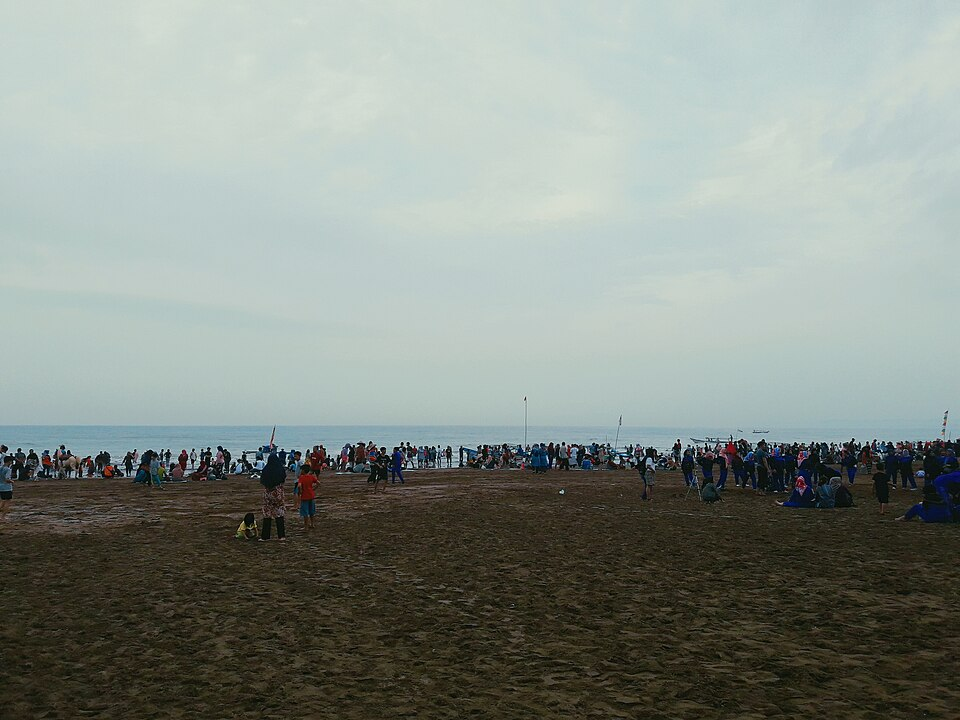

Indonesia Kaya
Telusuri Pesona Wisata, Keindahan Alam, dan Kekayaan Budaya yang Memukau di Jawa Barat.
Dari kawah vulkanik di dataran tinggi sampai tradisi kampung adat di pesisir selatan, Jawa Barat menyimpan cerita yang layak dijelajahi.

Kawah Putih
Situ Patenggang Angklung
Angklung

Pangandaran Keraton Kasepuhan
Keraton Kasepuhan